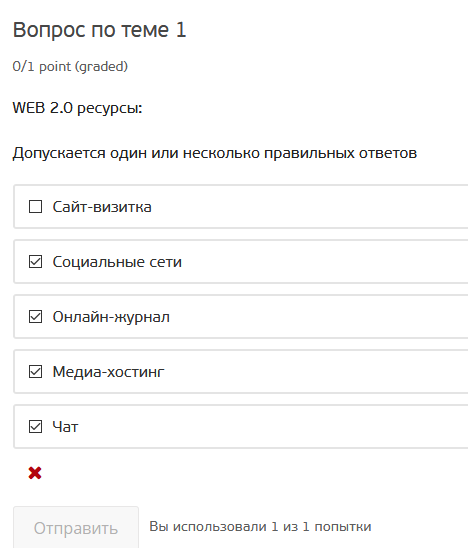
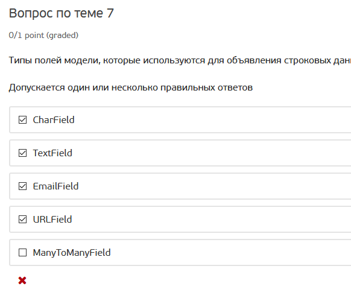
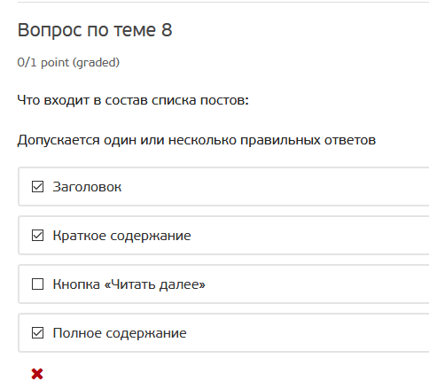
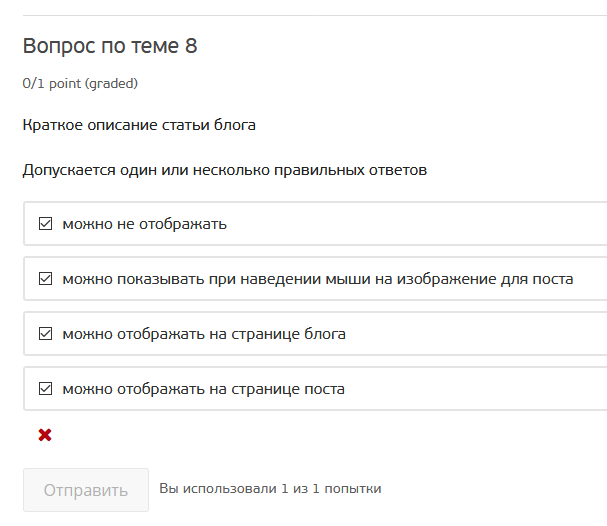
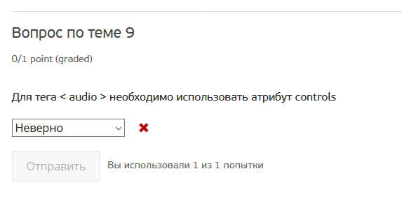
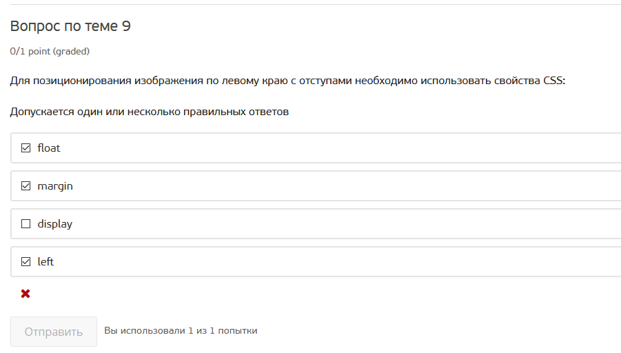
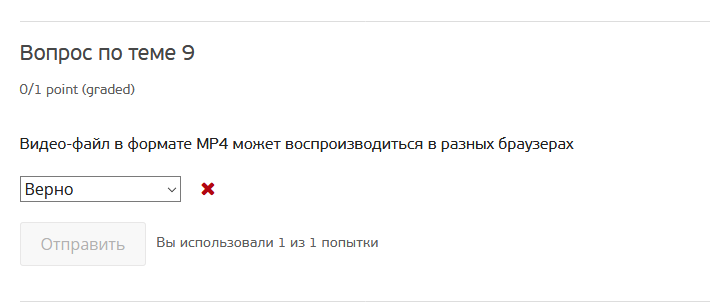
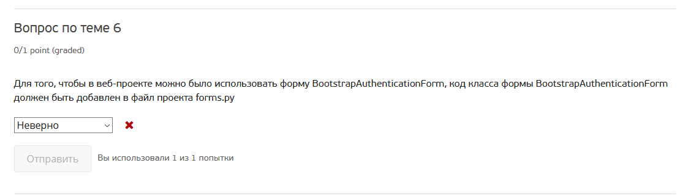
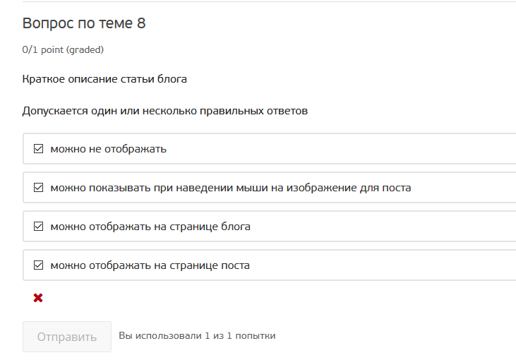
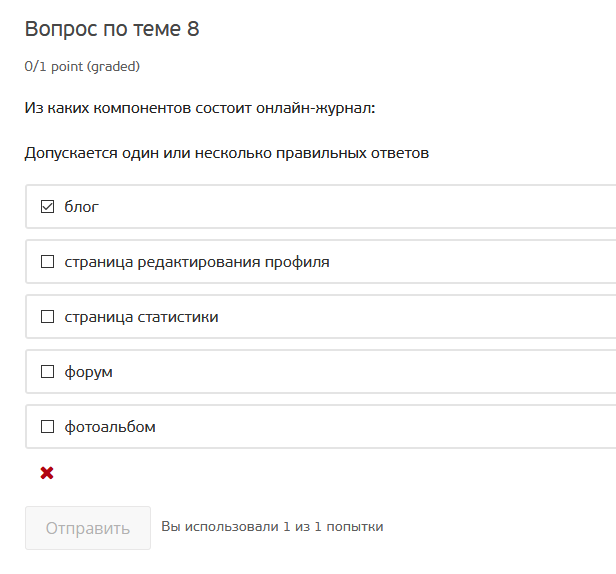

0101
Пункт "медиа-хостинг" неоднозначен с моей точки зрения.
Йотуб является медиахостингом для видеофайлов, но он определённо относится к веб 2.0.

0701
Емаил и урл неоднозначны с моей точки зрения.
С одной стороны они не строковые, т.к. хранят емаил и урл, а не просто строки текста.
С другой стороны и емаил и урл являются по факту текстовыми строками, к которым применены
определённые ограничения.
Кроме того, в базе они хранятся как строковые даннные, выводятся как строковые данные,
проверяются регулярками как строковые данные.

0801
Ответ неоднозначен.
Формулировка вопроса НЕ подразумевает отсылки к выполнению практического задания, вопрос общий.
И в общем в список постов могут входить все эти пункты, а могут не входить все эти пункты.
В списке постов, например, может быть вообще только дата и все - щелкаешь на ней и попадаешь на полный текст.
А можно и абсолютно всё в список постов включить, используя краткое содержание, допустим, только для рсс ленты.

0802
Ответ неоднозначен.
Абсолютно то же что по предыдущему пункту.
Краткое описание можно отображать абсолютно где угодно, зависит от концепции блога, заданной авторов,
у которого свое индивидуальное видение.
Никаких ограничений тут нет.

0901
Тэг controls не является необходимым для audio по спецификации html.
В курсе действительно говорилось, что надо размещать тэг controls ДЛЯ ТОГО ЧТО БЫ
пользователь имел возможность управлять.
Но если мы не хотим что бы пользователь управлял - его размещать не нужно.
Поэтому технической необходимости в этом тэге нет, а его применение зависит от сценария использования
аудио на странице, выбранной автором блога.
Кстати, в курсе так же говорится о необходимости тэга title в head, на самом деле такой необходимости
тоже нет, страницу можно сделать и без него, никакая ошибки при проверке по w3c не будет.

0902
Вопрос тоже неоднозначный.
Что бы спозиционировать изображение слева с отступами надо написать float: left; margin-left: 10px, допустим.
float, margin, left есть.
Да, я понимаю, left формально это не свойство, а значение, но вопрос определённо вводит в заблуждение.

0903
Файл mp4 действительно может воспроизводиться в разных браузерах.
У Вас даже в курсе указано, что он поддерживается в safari, internet explorer, chrome
Далее по финальному экзамену

final_6
Вопрос стоит как "код должен быть ДОБАВЛЕН".
Я использую Microsoft Visual Studio Community 2019, Version 16.8.3, я НЕ добавлял код в
файл forms.py, он УЖЕ там был при создании проекта.
Если бы вопрос был "должен ли код BotstrapAuthentificationForm" ПРИСУТСТВОВАТЬ в файле forms.py,
тогда я бы ответил "верно".
Но поскольку мне не пришлось ДОБАВЛЯТЬ его туда, то на вопрос должен ли быть он ДОБАВЛЕН я
ответил нет.
Это как минимум неоднозначный вопрос/ответ.

final_8a
Здесь считаю что ответил верно.
Это тот же вопрос что я выше уже комментировал в "0802".
Владелец блога может выбрать ЛЮБОЙ из вариантов отображения краткого описания который будет подходить к концепции ЕГО
личного блога, т.к. это веб 2.0, где все делается индивидуально.
Никаких техничеких ограничений по которым краткое описание было бы где-то отображать нельзя - нет.

final_8b
Здесь тоже считаю что ответил верно.
Онлайн журнал однозначно должен соддержать в себе лог.
Редактирования профиля может и не быть, пользователь может входить через другую социалку и не иметь отдельного профиля вообще.
Страница статистики так же не обязательна, не была нужна даже в выпускном задании на курсе.
Форум и фотоальбом тоже не обязательны.